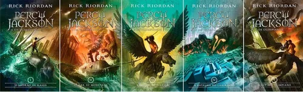
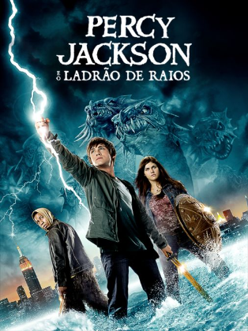
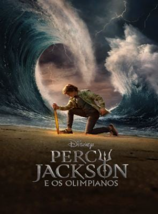

Percy Jackson
Percy Jackson é uma saga de cinco livros de romance, aventura, comédia, fantasia e mitologia grega, lançada em 1 de julho de 2005, escrita por Rick Riordan.
A saga vendeu mais de 33 milhões de exemplares nos EUA e conta com tradução para cerca de 37 línguas.
Em fevereiro de 2010 foi lançado o primeiro livro baseado na saga chamado "Percy Jackson e o Ladrão de Raios".
Além dos dois fimes (2010 e 2013) foi anunciada, em 2023, pela Disney+, uma série que será lançada em dezembro do mesmo ano.

Rick Riordan
Richard Russell Riordan Jr. nascido em 5 de junho de 1964 é um escritor norte-americano, best-seller do New York Times
com o primeiro livro da saga "O Ladrão de Raios". Antes de lançar Percy Jackson Rick já havia lançado a série adulta de mistério Três Navarre em 1997.
Atualmente o autor tem cerca 30 livros publicados e tem um total de 6 prêmios.

O Ladrão de Raios
E se os deuses do Olimpo estivessem vivos no século XXI? E se eles ainda se apaixonassem por mortais e gerassem filhos heróis? Segundo a lenda da Antiguidade, a maioria desses semideuses dificilmente passa da adolescência. Poucos conseguem descobrir sua identidade. Percy Jackson é filho de um deus. Ele está prestes a ser expulso do colégio... De novo. Mas, aos doze anos, esse é apenas mais um de seus problemas: além do transtorno do déficit de atenção e da dislexia, parece que, ultimamente, criaturas fantásticas e deuses do Olimpo saltam dos livros de mitologia diretamente para a realidade. E ao que tudo indica estão aborrecidos. O raio-mestre de Zeus foi roubado, e é Percy quem deve resgatá-lo. Para restaurar a paz no Olimpo, ele e seus amigos heróis precisarão fazer mais que capturar o verdadeiro ladrão: Percy terá de encarar o pai, resolver o enigma do Oráculo e desvendar uma traição mais ameaçadora que a fúria dos deuses.
Outras Produções
-
Percy Jackson e o Ladrão de Raios

Filme, 12 de fevereiro de 2010 (Brasil)
-
Percy Jackson e o Mar de Monstros
Filme, 16 de agosto de 2013 (Brasil)
-
Percy Jackson e os Olimpianos

Série, 20 de dezembro de 2023 (EUA)